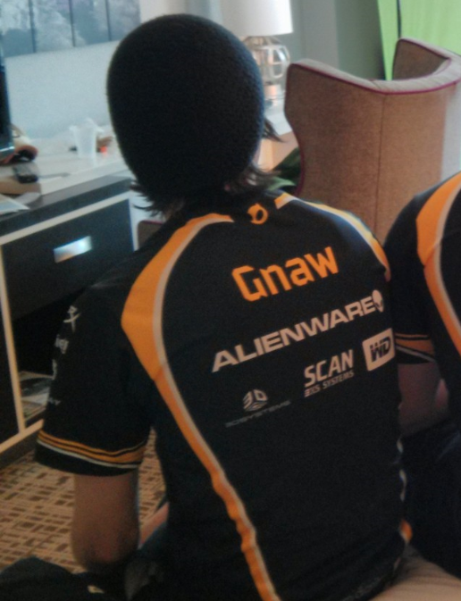
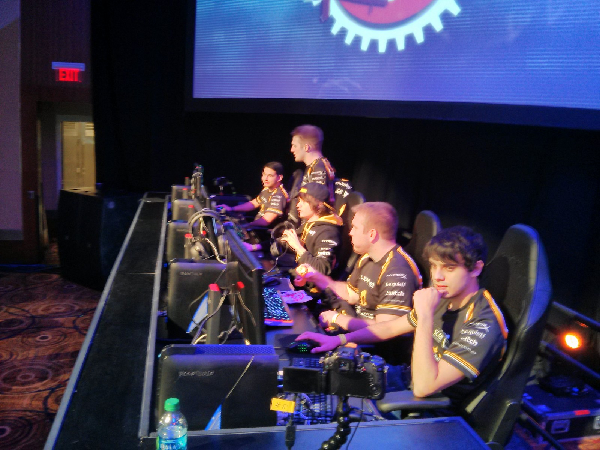

ABOUT ME
Developer, creator, esports leader, and storyteller focused on building immersive experiences and communities.
My name is Darrell Elston, though many people in the gaming industry know me by my online alias, Gnaw. My professional journey began in competitive gaming and content creation, but over the years it evolved into something much larger: building games, communities, and interactive experiences that reach players around the world.
For more than a decade, I have dedicated my career to the gaming industry from multiple perspectives. I have competed professionally, coached championship-winning teams, managed esports organizations, created content for large audiences, and ultimately transitioned into full-time game development. Each stage of that journey taught me valuable skills that continue to shape the projects I create today.
What started as a passion for gaming eventually became a passion for creating the experiences behind the games themselves.

My career began in content creation during the early days of live streaming. In 2014, I started streaming on Twitch and quickly built a dedicated audience through competitive gameplay and community engagement. In 2015, I achieved Twitch Partner status, allowing me to expand my reach and establish myself within the gaming industry.
During that same period, I entered professional esports as a player for Team Dignitas, competing professionally in SMITE. Competing at the highest level taught me discipline, teamwork, communication, and the ability to perform under pressure—skills that would later become invaluable in leadership and development roles.
In 2016, my team and I left Dignitas to form our own organization known as Team Eager. Shortly afterward, I transitioned away from active competition and into management and coaching. This move allowed me to help grow the organization beyond individual performance and focus on building successful teams and long-term systems.
As a manager and coach, I worked closely with Team Eager's SMITE Xbox roster and Paladins team. During my time leading these teams, the SMITE Xbox roster secured multiple major championship victories and ultimately won a World Championship. Those achievements were the result of countless hours of player development, strategy creation, team management, and leadership.
Working within esports gave me firsthand experience managing people, solving problems under pressure, organizing operations, and helping talented individuals perform at their highest level. These leadership skills continue to influence how I approach game development and project management today.

Beyond SMITE, I continued to pursue competition across several major esports titles.
In Overwatch, I achieved Top 500 rankings on three separate accounts, with my highest-ranked account reaching Rank 8 in North America. During the inaugural Overwatch World Cup, I was nominated by Blizzard Entertainment as a candidate to represent Team USA, an experience that further solidified my reputation as a high-level competitor.
In 2018, I expanded into professional Fortnite competition and competed under Team Method. By this point, I had spent years competing, creating content, and working within esports organizations. While esports had opened many opportunities, I found myself increasingly interested in the creative side of gaming and began exploring game development as the next chapter of my career.
Shortly thereafter, I made the decision to step away from professional competition and focus entirely on learning how games are designed, built, and maintained.
Around 2018 and 2019, I shifted my primary focus from competitive gaming to game development. Having spent years understanding games from a player's perspective, I became fascinated with the systems, mechanics, and technology that power them.
My first commercial title, Horror Hunt, was released on Steam in 2019 and developed using Unreal Engine 4. The project served as a major milestone in my development career, teaching me the realities of shipping a commercial product and managing the full lifecycle of game development.
Developing Horror Hunt required learning gameplay systems, networking, multiplayer architecture, user experience design, optimization, testing, and post-launch support. More importantly, it confirmed my passion for creating games rather than simply playing them.
Since then, I have spent the majority of my professional time refining my development skills and expanding my technical expertise across multiple platforms and engines.
In 2022, I expanded into Roblox development and undertook a complete rebuild of a popular Roblox experience known as Auto Rap Battles.
Rather than simply modifying existing systems, I rebuilt the project from the ground up while modernizing the game's architecture and improving its long-term scalability.
The project has since grown to more than 33 million visits, making it one of the most successful projects I have worked on.
Interested in collaborating or learning more about my work? Feel free to get in touch.